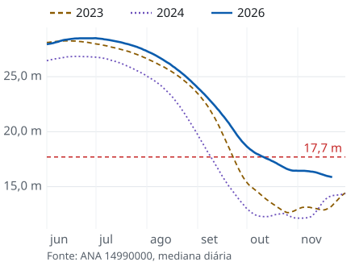
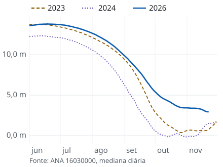
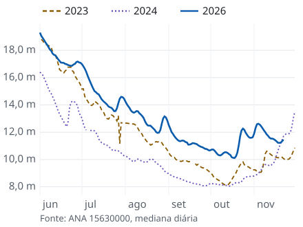
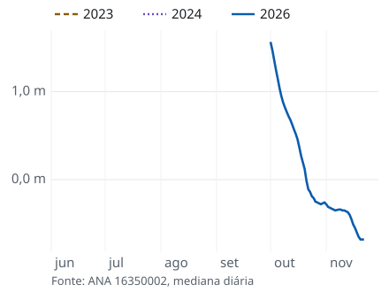

Informação que protege
Seca 2026: o Rio Negro chegou a 17,7 m em Manaus em 12 de outubro
19 dias mais tarde que em 2023 e 32 dias mais tarde que em 2024.
Uma regra simples de tendência, definida antes de olharmos o resultado, teria avisado de 10 a 20 dias antes do cruzamento nos três anos. São só três temporadas; os limites estão no fim da página.
17,7 m no Porto de Manaus é o nível que a ANTAQ usa como condição para a cobrança da “taxa da seca” no transporte de contêineres. Em 22/11/2026 o rio estava em 15,87 m, o menor nível do ano até agora (mínimo provisório: a vazante de 2026 ainda não terminou), e ainda descia, cerca de 4 cm por dia.
Quando o rio cruzou cada nível em Manaus
| Ano | 20 m | 19 m | 17,7 m | Mínimo no período |
|---|---|---|---|---|
| 2023 | 16/09 | 19/09 | 23/09 | 12,64 m em 26/10 |
| 2024 | 31/08 | 04/09 | 10/09 | 12,14 m em 01/11 |
| 2026 | 24/09 | 29/09 | 12/10 | 15,87 m em 22/11, provisório: a vazante ainda não terminou |

O que um aviso antecipado teria feito
A regra: todo dia, uma reta ajustada aos últimos 14 dias projeta quando o rio chega a 17,7 m. Se a projeção cai em até N dias, o aviso dispara. Contamos como alarme falso o aviso depois do qual o rio não cruzou em até N + 5 dias. A regra foi registrada antes de rodarmos a simulação, e nada foi ajustado depois.
| Prazo N | 2023 | 2024 | 2026 |
|---|---|---|---|
| 15 dias | 13/09 · 10 dias antes | 28/08 · 13 dias antes | 22/09 · 20 dias antes |
| 10 dias | 16/09 · 7 dias antes | 01/09 · 9 dias antes | 26/09 · 16 dias antes · alarme falso |
| 7 dias | 18/09 · 5 dias antes | 03/09 · 7 dias antes | 28/09 · 14 dias antes · alarme falso |
Com prazo de 15 dias, a regra acertou nos três anos, sem alarme falso. Com 7 ou 10 dias, ela errou em 2026: a descida de setembro perdeu força antes de chegar a 17,7 m, e o cruzamento veio depois do prazo.
Outras estações
Não há cotas oficiais de seca para estas estações; mostramos o menor nível de cada ano.
| Estação | 2023 | 2024 | 2026 |
|---|---|---|---|
| Itacoatiara (Amazonas) | 0,37 m em 26/10 | −0,16 m em 31/10 | 2,94 m em 22/11, provisório (ainda descendo) |
| Humaitá (Madeira) | 8,12 m em 12/10 | 8,05 m em 14/10 | 10,11 m em 18/10 |
| Parintins (Amazonas) | sem dado | sem dado | −0,68 m em 20/11 (só desde 01/10) |



Limites desta análise
- São só três temporadas, com um cruzamento cada. É pouco para falar em taxa de acerto. O próximo passo é testar a regra em décadas de série histórica da ANA.
- O dado é a telemetria da ANA, ainda não consistida. Usamos a mediana do dia, que pode diferir em alguns centímetros da leitura oficial do porto. Em 02/10/2026 a estação marcou de 18,42 m a 18,60 m, e o porto, 18,59 m.
- A vazante de 2026 ainda não terminou.
- O sensor do baixo Madeira (Urucurituba) ficou travado em 22,27 m por 55 dias e foi descartado.
- A regra só olha a tendência do próprio rio. Não usa chuva, previsão nem outros rios.
Fontes e dados
- ANA, HidroWeb e o serviço de telemetria da ANA (estações 14990000, 16030000, 15630000, 16350002 e 15960060).
- SGB, Sistema de Alerta de Eventos Críticos.
- Limiar de 17,7 m: recomendação do MPF sobre a taxa da seca.
- Relatório completo, dados diários (CSV) e scripts.
Empresas de navegação e Defesas Civis: procuramos parceiros para um piloto na vazante de 2027, com o aviso de seca ligado. Escreva para aquaalerta.app@gmail.com.